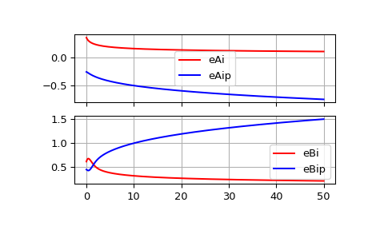

scipy.special.airye¶
-
scipy.special.airye(z) = <ufunc 'airye'>¶ Exponentially scaled Airy functions and their derivatives.
Scaling:
eAi = Ai * exp(2.0/3.0*z*sqrt(z)) eAip = Aip * exp(2.0/3.0*z*sqrt(z)) eBi = Bi * exp(-abs(2.0/3.0*(z*sqrt(z)).real)) eBip = Bip * exp(-abs(2.0/3.0*(z*sqrt(z)).real))
- Parameters
- zarray_like
Real or complex argument.
- Returns
- eAi, eAip, eBi, eBiparray_like
Exponentially scaled Airy functions eAi and eBi, and their derivatives eAip and eBip
See also
Notes
Wrapper for the AMOS [1] routines zairy and zbiry.
References
- 1
Donald E. Amos, “AMOS, A Portable Package for Bessel Functions of a Complex Argument and Nonnegative Order”, http://netlib.org/amos/
Examples
We can compute exponentially scaled Airy functions and their derivatives:
>>> from scipy.special import airye >>> import matplotlib.pyplot as plt >>> z = np.linspace(0, 50, 500) >>> eAi, eAip, eBi, eBip = airye(z) >>> f, ax = plt.subplots(2, 1, sharex=True) >>> for ind, data in enumerate([[eAi, eAip, ["eAi", "eAip"]], ... [eBi, eBip, ["eBi", "eBip"]]]): ... ax[ind].plot(z, data[0], "-r", z, data[1], "-b") ... ax[ind].legend(data[2]) ... ax[ind].grid(True) >>> plt.show()
We can compute these using usual non-scaled Airy functions by:
>>> from scipy.special import airy >>> Ai, Aip, Bi, Bip = airy(z) >>> np.allclose(eAi, Ai * np.exp(2.0 / 3.0 * z * np.sqrt(z))) True >>> np.allclose(eAip, Aip * np.exp(2.0 / 3.0 * z * np.sqrt(z))) True >>> np.allclose(eBi, Bi * np.exp(-abs(np.real(2.0 / 3.0 * z * np.sqrt(z))))) True >>> np.allclose(eBip, Bip * np.exp(-abs(np.real(2.0 / 3.0 * z * np.sqrt(z))))) True
Comparing non-scaled and exponentially scaled ones, the usual non-scaled function quickly underflows for large values, whereas the exponentially scaled function does not.
>>> airy(200) (0.0, 0.0, nan, nan) >>> airye(200) (0.07501041684381093, -1.0609012305109042, 0.15003188417418148, 2.1215836725571093)